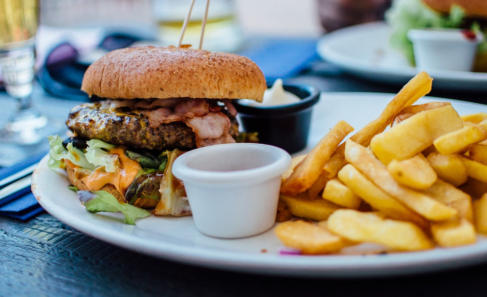

Australian-Lebanese Fusion Cuisine

In the arena of culinary exploration, there are countless possibilities to combine flavors, strategies, and components from one-of-a-kind cultures. One particularly thrilling fusion is the mixing of Asian and Mexican cuisines. Both are recognized for his or her ambitious flavors, colourful spices, and numerous substances, making them a natural pairing for culinary experimentation. In this blog, we'll dive into the charming international of Asian-Mexican fusion cuisine and discover a way to spice up your meals with those flavorful recipes.
1. Introduction to Australian-Lebanese Fusion Cuisine
Australia and Lebanon might appear worlds apart, but inside the world of culinary exploration, obstacles are supposed to be crossed. The fusion of Australian and Lebanese cuisine brings collectively the freshness of Australian produce with the formidable flavors of Lebanese spices and substances. This precise combo creates a culinary revel in that is both exciting and scrumptious, imparting a sparkling attitude on traditional dishes from each cultures.
2. The Marriage of Fresh Australian Ingredients and Lebanese Spices:
One of the important thing elements of Australian-Lebanese fusion delicacies is the usage of sparkling, regionally sourced Australian substances. From succulent seafood to vibrant culmination and vegetables, Australian delicacies celebrates the herbal bounty of the land. When blended with the fragrant spices and herbs of Lebanese cooking, such as sumac, za'atar, and cinnamon, these ingredients create a harmonious balance of flavors that tantalize the flavor buds.
3. Exploring Signature Dishes of Australian-Lebanese Fusion:
In Australian-Lebanese fusion delicacies, conventional dishes from both cultures are reimagined and reinvented to create something completely new and interesting. For instance, a conventional Australian barbeque is probably infused with Lebanese flavors, the usage of spices like baharat to season the beef and serving it with a aspect of tabbouleh salad. Similarly, Lebanese mezze dishes like hummus and baba ganoush can be given an Australian twist by way of incorporating native components like macadamia nuts or avocado.
4. Fusion Innovations: From Lamb Shawarma Pies to Vegemite Falafel:
The creativity of Australian-Lebanese fusion cuisine knows no bounds, with chefs continuously pushing the boundaries of flavor mixtures and culinary strategies. One revolutionary dish that has won recognition is the lamb shawarma pie, which combines the smooth, spiced lamb of Lebanese shawarma with the flaky pastry crust of an Australian meat pie. Another unexpected pride is the Vegemite falafel, wherein the iconic Australian spread provides a salty, umami kick to the conventional chickpea fritters.
5.Embracing Diversity and Celebrating Fusion:
In a world this is increasingly more interconnected, Australian-Lebanese fusion delicacies reflects the range and multiculturalism that defines present day society. By embracing the culinary traditions of each cultures and combining them in modern methods, cooks are capable of create dishes that aren't best delicious but also tell a tale of cultural trade and collaboration. In doing so, they celebrate the wealthy tapestry of human revel in and remind us that food has the electricity to deliver us collectively, regardless of wherein we come from.
Conclusion:
Australian-Lebanese fusion delicacies offers a tantalizing journey via the flavors of wonderful cultures, blending the freshness of Australian components with the formidable spices of Lebanese cooking. From classic dishes with a twist to modern creations that push the boundaries of flavor, this culinary fusion celebrates range and creativity in same degree. So why no longer embark in your own culinary journey and explore the scrumptious global of Australian-Lebanese fusion cuisine? Who is aware of what delectable delights you might discover alongside the manner!